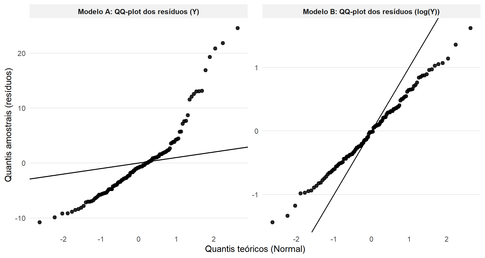
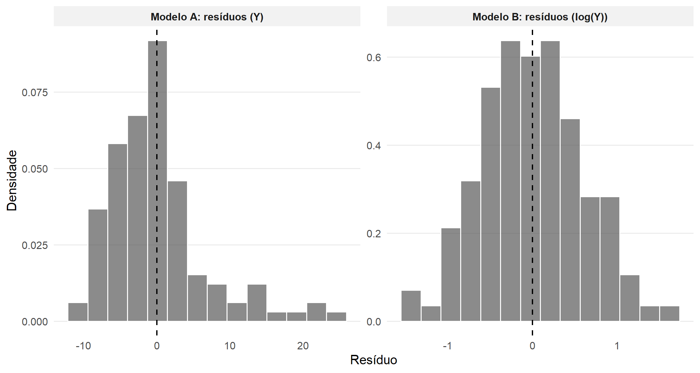
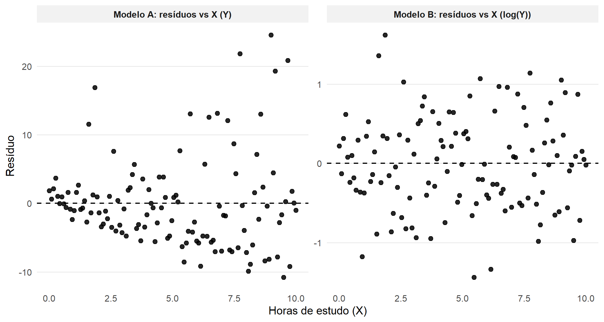

library(dplyr)
set.seed(2025)
n <- 120
X <- seq(0, 10, length.out = n)
# Relação linear na escala log(Y)
sigma <- 0.6
logY <- 1.0 + 0.20*X + rnorm(n, 0, sigma)
Y <- exp(logY)
df <- tibble(
X = X,
Y = Y,
logY = log(Y)
)9 Transformações nas Variáveis
9.1 Motivação
Quando os gráficos de resíduos revelam padrões sistemáticos, heteroscedasticidade ou violações de normalidade, é sinal de que a especificação do modelo pode estar inadequada. Em termos formais, isso significa que ao menos uma das hipóteses centrais do MRLS — linearidade da função média, homoscedasticidade ou normalidade dos erros — pode não estar sendo satisfeita (Montgomery; Peck; Vining (2021); Kutner et al. (2005)).
A regressão linear simples assume que
\[ E(Y \mid X) = \beta_0 + \beta_1 X \quad \text{e} \quad Var(Y \mid X) = \sigma^2, \]
ou seja, uma relação linear na média e variância constante condicionalmente a \(X\). Quando os resíduos exibem padrões como funil (variância crescente), curvaturas sistemáticas ou forte assimetria, o modelo ajustado não está capturando adequadamente a estrutura do processo gerador dos dados.
Uma das abordagens mais tradicionais para lidar com tais situações é aplicar transformações matemáticas às variáveis, de modo a:
- estabilizar a variância;
- aproximar a normalidade dos erros;
- linearizar a relação entre as variáveis;
- tornar a interpretação estatística mais coerente com a estrutura do fenômeno estudado.
Há duas formas de realizar tais transformações:
(a) na variável resposta (\(Y\)) e
(b) na variável explicativa (\(X\)).
Note que, ao aplicarmos uma transformação de variáveis, estamos implicitamente redefinindo o modelo estatístico. Por exemplo, ao transformar \(Y\) em \(\log(Y)\), deixamos de modelar diretamente \(E(Y \mid X)\) e passamos a modelar \(E(\log Y \mid X)\). Isso altera a interpretação dos coeficientes, a distribuição assumida para os erros e, em certos casos, a própria classe de modelos implícita (Weisberg (2005); Kutner et al. (2005)).
Portanto, transformações devem ser motivadas por evidência empírica (diagnóstico de resíduos) e, sempre que possível, por fundamentação teórica do fenômeno estudado. Aplicá-las de forma automática pode melhorar métricas numéricas de ajuste, mas comprometer a interpretação do modelo.
Além disso, a aplicação de uma transformação implica um novo ciclo completo de análise:
- Ajustar o modelo transformado.
- Reavaliar os resíduos.
- Verificar se as hipóteses agora são plausíveis.
Esse processo é inerentemente iterativo.
Quando a transformação envolve apenas mudanças algébricas simples (como logaritmo ou raiz quadrada), as justificativas formais podem ser entendidas via propriedades de variância e distribuições conhecidas; demonstrações mais técnicas dessas propriedades podem ser consultadas no Apêndice de Demonstrações {#demo}.
Nas seções seguintes, analisaremos separadamente as transformações aplicadas à variável resposta e à variável explicativa, enfatizando sua motivação estatística e suas implicações interpretativas.
9.2 Transformações na variável resposta (\(Y\))
As transformações na variável resposta têm como objetivo principal modificar a estrutura probabilística condicional de \(Y\) dado \(X\). Em muitos contextos aplicados, a violação das hipóteses do MRLS decorre não da forma funcional da média, mas do comportamento da variância ou da distribuição dos erros.
Recordando que o MRLS assume \(Var(Y \mid X) = \sigma^2\),qualquer evidência de que
\[ Var(Y \mid X) \neq \text{constante} \]
ou que os erros apresentam forte assimetria ou caudas pesadas pode motivar uma transformação em \(Y\) (Montgomery; Peck; Vining (2021); Kutner et al. (2005); Weisberg (2005)).
Para exemplificar, suponha que a variância condicional dependa da média:
\[ Var(Y \mid X) = g\big(E(Y \mid X)\big), \]
para alguma função \(g(\cdot)\) crescente. Isso ocorre, por exemplo:
- quando a variância é proporcional à média (dados de contagem);
- quando a variância cresce aproximadamente com o quadrado da média (dados positivos e assimétricos);
- quando há padrão de funil nos resíduos vs. ajustados.
Nesse cenário, podemos buscar uma transformação \(Y^* = h(Y)\) tal que
\[ Var(Y^* \mid X) \approx \text{constante}. \]
Esse princípio é conhecido como estabilização da variância, e sua justificativa formal pode ser obtida por expansão de Taylor de primeira ordem (ver Apêndice de Demonstrações {#demo}).
É importante destacar que transformar \(Y\) altera simultaneamente: - a escala da resposta; - a forma da distribuição condicional; - a interpretação dos coeficientes.
Portanto, não estamos apenas “melhorando resíduos”, mas redefinindo o modelo estatístico.
9.2.1 Transformação e distribuição implícita
Se ajustamos o modelo
\[ Y_i^* = h(Y_i) = \beta_0^* + \beta_1^* X_i + \varepsilon_i, \quad \varepsilon_i \sim N(0,\sigma^2), \]
então estamos assumindo normalidade na escala transformada.
Isso implica que, na escala original, \(Y\) possui distribuição derivada da transformação inversa. Por exemplo:
- se \(h(Y)=\log Y\), então \(Y\) é log-normal condicionalmente a \(X\);
- se \(h(Y)=\sqrt Y\), a distribuição resultante não é normal na escala original, mas a variância pode se tornar aproximadamente constante;
- se \(h(Y)=1/Y\), a estrutura média passa a ser modelada em termos do inverso da resposta.
Essa mudança tem implicações importantes para:
- interpretação de coeficientes;
- construção de intervalos de confiança;
- previsão na escala original.
Ao transformar \(Y\), a hipótese de normalidade passa a ser avaliada na nova escala. Isso significa que testes \(t\), testes \(F\) e intervalos de confiança são válidos sob a suposição de normalidade dos erros na escala transformada, não necessariamente na escala original (Kutner et al. (2005)).
Nas subseções seguintes, discutiremos transformações específicas, a saber, logaritmo, raiz quadrada, inverso e potência.
9.2.2 Logaritmo (\(Y^* = \log Y\))
A transformação logarítmica é uma das mais utilizadas em regressão, especialmente quando \(Y\) é positiva e apresenta assimetria à direita ou variância crescente com o nível médio.
Se ajustamos o modelo
\[ Y_i^* = \log(Y_i) = \beta_0^* + \beta_1^* X_i + \varepsilon_i, \quad \varepsilon_i \sim N(0, \sigma^2), \]
estamos assumindo normalidade dos erros na escala logarítmica. Isso implica que, condicionalmente a \(X_i\), a variável original \(Y_i\) segue uma distribuição log-normal (Kutner et al. (2005); Weisberg (2005)).
Mais precisamente, se
\[ \log(Y_i) \mid X_i \sim N(\mu_i, \sigma^2), \]
então
\[ Y_i \mid X_i \sim \text{LogNormal}(\mu_i, \sigma^2). \]
A transformação logarítmica converte relações multiplicativas em aditivas. Se, na escala original,
\[ Y = \alpha \exp(\beta X) \cdot U, \]
onde \(U\) é um termo multiplicativo de erro, então
\[ \log Y = \log \alpha + \beta X + \log U, \]
ou seja, o modelo passa a ter estrutura linear com erro aditivo na escala transformada.
Isso significa que o logaritmo é particularmente adequado quando:
- a variabilidade é proporcional ao nível médio;
- o crescimento é aproximadamente exponencial;
- o erro atua de forma multiplicativa na escala original.
No modelo
\[ E[\log(Y) \mid X] = \beta_0^* + \beta_1^* X, \]
o coeficiente \(\beta_1^*\) representa a variação aditiva no logaritmo da resposta para cada unidade adicional em \(X\).
Na escala original,
\[ E(Y\mid X) = \exp(\beta_0^*) \cdot \exp(\beta_1^* X). \]
Assim, um aumento de 1 unidade em \(X\) multiplica o valor esperado de \(Y\) por \(\exp(\beta_1^*)\).
Para valores pequenos de \(\beta_1^*\), podemos usar a aproximação
\[ \exp(\beta_1^*) \approx 1 + \beta_1^*, \]
o que leva à interpretação aproximada de que \(\beta_1^* \times 100\%\) representa uma variação percentual em \(Y\) para cada unidade de \(X\).
Essa interpretação percentual é uma aproximação válida apenas quando \(|\beta_1^*|\) é pequeno. O efeito exato é multiplicativo e deve ser interpretado via \(\exp(\beta_1^*)\).
9.2.2.1 Variância e estabilização
Se a variância cresce aproximadamente de forma proporcional ao quadrado da média,
\[ Var(Y \mid X) \propto [E(Y \mid X)]^2, \]
então a transformação logarítmica tende a produzir variância aproximadamente constante na escala transformada.
Advertência sobre retransformação
Ao obter previsões na escala original, não é correto simplesmente calcular
\[ \widehat{Y} = \exp(\widehat{\log Y}), \]
pois, para variável log-normal,
\[ E(Y \mid X) = \exp(\mu + \tfrac{1}{2}\sigma^2), \]
e não apenas \(\exp(\mu)\) (Casella; Berger (2002)). Ignorar esse termo pode introduzir viés de retransformação.
Quando usar
- Resíduos vs. ajustados exibem padrão de funil.
- Histograma dos resíduos apresenta assimetria à direita.
- QQ-plot mostra caudas pesadas superiores.
- Relação parece exponencial na escala original.
Gráficos sugeridos para verificação:
Resíduos vs. \(\hat Y\) (o que verificar: formato de funil; resultado esperado após transformação: dispersão homogênea).
QQ-plot dos resíduos (o que verificar: caudas pesadas; resultado esperado após transformação: alinhamento mais próximo à reta).
Histograma dos resíduos (o que verificar: assimetria; aresultado esperado após transformação: formato mais próximo da normal).
9.2.3 Raiz quadrada (\(Y^* = \sqrt{Y}\))
A transformação pela raiz quadrada é frequentemente utilizada quando \(Y\) representa contagens ou frequências.
Por exemplo, se \(Y_i \sim \text{Poisson}(\mu_i)\), então
\[ E(Y_i) = \mu_i, \quad Var(Y_i) = \mu_i, \]
ou seja, a variância é proporcional à média.
Aplicando a transformação
\[ Y_i^* = \sqrt{Y_i}, \]
e utilizando aproximação por expansão de Taylor, obtém-se
\[ Var(Y_i^*) \approx \frac{1}{4}, \]
que é aproximadamente constante e independe de \(\mu_i\) (ver Apêndice de Demonstrações {#demo}).
Note que a raiz quadrada reduz a assimetria típica de distribuições de contagem e estabiliza a variância quando esta é proporcional à média.
O modelo passa então a explicar a variação na raiz da resposta, não na resposta original. Isso altera a escala e deve ser explicitado ao interpretar coeficientes.
Quando usar
- Dados de contagem.
- Variância aproximadamente proporcional à média.
- Histograma com cauda longa à direita.
Gráficos sugeridos para verificação:
Histograma dos resíduos (o que verificar: cauda longa; resultado esperado após transformação: simetria).
Resíduos vs. \(\hat Y\) (o que verificar: variância crescente; resultado esperado após transformação: dispersão estável).
9.2.4 Inverso (\(Y^* = 1/Y\))
A transformação inversa é útil quando a relação entre \(Y\) e \(X\) apresenta comportamento do tipo decaimento rápido em direção a um limite.
Se a relação original for não linear, por exemplo,
\[ Y = \frac{1}{\alpha + \beta X}, \]
então
\[ \frac{1}{Y} = \alpha + \beta X, \]
que é linear.
Essa transformação é comum em fenômenos físicos e biológicos nos quais a resposta diminui rapidamente e depois se estabiliza.
O modelo ajustado explica o comportamento do inverso da resposta. A interpretação substantiva deve ser feita com cuidado, pois aumentos em \(X\) passam a produzir efeitos lineares sobre \(1/Y\), e não diretamente sobre \(Y\).
Quando usar
Modelos onde a resposta diminui de forma não linear (ex.: tempo de reação decrescendo com aumento de dose).
Gráficos sugeridos para verificação:
Resíduos vs. \(X\) (o que verificar: padrão curvilíneo; resultado esperado após transformação: dispersão aleatória).
QQ-plot dos resíduos (o que verificar: forte desvio; resultado esperado após transformação: mais alinhado).
9.2.5 Quadrado (\(Y^* = Y^2\))
A transformação quadrática pode ser útil quando a variabilidade é maior em valores pequenos de \(Y\) ou quando a relação é convexa na escala original.
Ao elevar \(Y\) ao quadrado, ampliamos diferenças em níveis mais altos da resposta, o que pode reduzir padrões estruturais nos resíduos.
Essa transformação modifica significativamente a escala e deve ser utilizada apenas quando há justificativa empírica clara nos gráficos de resíduos.
Gráficos sugeridos para verificação:
Resíduos vs. \(\hat Y\) (o que verificar: padrão em arco; resultado esperado após transformação: dispersão homogênea).
Histograma dos resíduos (o que verificar: concentração em torno de 0; resultado esperado após transformação: mais espalhado).
9.3 Transformações na variável explicativa (\(X\))
As transformações na variável explicativa têm como objetivo principal linearizar a relação entre \(X\) e a média condicional de \(Y\), preservando, quando possível, a estrutura de variância constante dos erros.
Recordando que o MRLS assume \(E(Y \mid X) = \beta_0 + \beta_1 X\), portanto, qualquer evidência de que a relação média entre \(Y\) e \(X\) não é linear, por exemplo, presença de curvatura sistemática no gráfico de resíduos vs. \(X\), sugere que a especificação funcional pode estar inadequada (Montgomery; Peck; Vining (2021); Kutner et al. (2005)).
Nesse caso, buscamos uma transformação \(X^* = h(X)\) tal que
\[ E(Y \mid X^*) = \beta_0 + \beta_1 X^* \]
represente melhor a estrutura média do fenômeno.
Transformar \(X\) significa alterar a forma funcional da regressão em relação à variável \(X\), mas não a natureza probabilística da variável resposta. Diferentemente das transformações em \(Y\), aqui a distribuição condicional de \(Y\) não é redefinida; apenas modificamos a forma como a média depende da variável explicativa.
Portanto:
- Transformações em \(Y\) → alteram a escala da resposta e a estrutura probabilística.
- Transformações em \(X\) → alteram a forma funcional da média em relação à variável \(X\).
9.3.1 Motivação estatística
Se o gráfico de resíduos vs. \(X\) exibe:
- padrão em arco (concavidade ou convexidade),
- forma em S,
- tendência sistemática crescente ou decrescente,
então o modelo linear \(\beta_0 + \beta_1 X\) não está capturando adequadamente a relação entre as variáveis. A solução é buscar uma transformação \(h(X)\) tal que a nova relação seja aproximadamente linear.
Essa estratégia é coerente com o princípio geral de modelagem estatística: especificar corretamente a função média antes de avaliar a variância dos erros (Weisberg (2005)).
9.3.2 Logaritmo (\(X^* = \log X\))
A transformação logarítmica em \(X\) é apropriada quando a relação entre \(Y\) e \(X\) apresenta comportamento de crescimento proporcional ou lei de potência.
Suponha que a relação verdadeira seja
\[ Y = \alpha X^\beta + \varepsilon. \]
Tomando logaritmo em ambos os lados (desconsiderando momentaneamente o erro),
\[ \log Y = \log \alpha + \beta \log X. \]
Se também transformarmos \(Y\), obtemos o chamado modelo log-log, amplamente utilizado em econometria.
No entanto, mesmo sem transformar \(Y\), pode ser apropriado modelar
\[ Y = \beta_0 + \beta_1 \log X + \varepsilon, \]
quando o efeito de \(X\) diminui à medida que \(X\) cresce.
Observe que no modelo
\[ Y = \beta_0 + \beta_1 \log X, \]
o coeficiente \(\beta_1\) representa a variação média em \(Y\) associada a uma variação proporcional em \(X\). Mais especificamente, um aumento percentual em \(X\) está associado a uma variação aproximadamente linear em \(Y\).
Portanto, a transformação logarítmica em \(X\) não implica mudança na distribuição de \(Y\).
Gráfico sugerido:
- Resíduos vs. \(X\) (o que verificar: curva sistemática; resultado esperado após transformação: dispersão aleatória).
9.3.3 Inverso (\(X^* = 1/X\))
A transformação inversa é adequada quando o efeito de \(X\) é muito forte para valores pequenos e diminui rapidamente conforme \(X\) aumenta.
Exemplo típico:
fenômenos de aprendizado;
processos de saturação;
respostas que se estabilizam para grandes valores de \(X\).
Se a relação verdadeira for aproximadamente
\[ Y = \alpha + \frac{\beta}{X}, \]
então
\[ Y = \alpha + \beta X^* \]
com \(X^* = 1/X\).
A transformação inversa captura comportamentos de retorno decrescente ou aproximação assintótica.
Gráfico sugerido:
- Resíduos vs. \(X\) (o que verificar: curva decrescente; resultado esperado após transformação: sem padrão).
9.3.4 Potências e termos polinomiais (\(X^2\), \(X^3\), …)
Quando a relação apresenta curvatura suave, uma alternativa é expandir o modelo com termos polinomiais:
\[ Y = \beta_0 + \beta_1 X + \beta_2 X^2 + \cdots + \varepsilon. \]
Esse modelo continua sendo linear nos parâmetros (condição essencial do MRLS), embora não seja linear em \(X\).
Temos então que:
\(\beta_2 > 0\) → concavidade para cima (convexidade).
\(\beta_2 < 0\) → concavidade para baixo.
Apesar de introduzir não linearidade em \(X\), o modelo permanece linear em relação aos parâmetros \(\beta_j\). Isso garante que:
os estimadores de MQO continuam válidos;
as propriedades inferenciais permanecem as mesmas.
Essa distinção entre linearidade nos parâmetros e linearidade na variável explicativa é conceitualmente central em regressão linear.
Gráfico sugerido:
- Resíduos vs. \(X\) (o que verificar: arco ou S-curva; resultado esperado após transformação: resíduos aleatórios).
9.3.5 Transformar \(X\) ou adicionar polinômios?
Há duas estratégias principais para lidar com curvaturas:
Transformar \(X\) (por exemplo, \(\log X\), \(1/X\)).
Incluir termos polinomiais (\(X^2\), \(X^3\)).
A escolha depende de:
coerência teórica;
interpretação desejada;
estabilidade numérica do ajuste.
Transformações simples costumam ter interpretação mais direta; polinômios oferecem maior flexibilidade, mas podem introduzir instabilidade em extrapolações.
Logo, as transformações na variável explicativa:
- buscam linearizar a função média;
- não alteram a estrutura probabilística da resposta;
- preservam a estrutura básica do MRLS;
- exigem reavaliação completa dos resíduos após o ajuste.
9.4 Guia prático: escolhendo a transformação
Após compreender as motivações teóricas para transformar \(Y\) ou \(X\), surge a questão prática: como decidir qual transformação aplicar?
A escolha não deve ser arbitrária nem baseada apenas em melhora numérica de \(R^2\). O critério central é a adequação às hipóteses do modelo e à estrutura substantiva do fenômeno (Montgomery; Peck; Vining (2021); Kutner et al. (2005)).
Etapa 1 — Diagnóstico inicial
Antes de qualquer transformação, ajusta-se o modelo na escala original:
\[ Y_i = \beta_0 + \beta_1 X_i + e_i. \]
Em seguida, analisam-se os resíduos:
- Resíduos vs. ajustados → verificar homoscedasticidade.
- Resíduos vs. \(X\) → verificar linearidade.
- QQ-plot → verificar normalidade.
- Histograma → avaliar assimetria e caudas.
A transformação deve responder a um padrão empírico específico observado nos resíduos. Se não há padrão sistemático, não há justificativa para transformar.
Etapa 2 — Identificação do padrão
Alguns padrões típicos e suas possíveis soluções:
| Padrão observado | Possível causa | Transformação sugerida |
|---|---|---|
| Funil (variância cresce com média) | \(Var(Y \mid X)\) proporcional à média ou ao quadrado da média | \(\log(Y)\) ou \(\sqrt{Y}\) |
| Curvatura em arco | Relação não linear entre \(Y\) e \(X\) | \(X^2\) ou \(\log(X)\) |
| Assimetria à direita | Distribuição assimétrica positiva | \(\log(Y)\) |
| Efeito forte em valores pequenos de \(X\) | Retorno decrescente | \(1/X\) |
Cada transformação responde a um mecanismo estrutural distinto. Não se trata de “corrigir o gráfico”, mas de modelar melhor o processo subjacente.
Etapa 3 — Ajuste do modelo transformado
Após escolher a transformação, ajusta-se o novo modelo, por exemplo:
\[ \log(Y_i) = \beta_0^* + \beta_1^* X_i + \varepsilon_i, \]
ou
\[ Y_i = \beta_0 + \beta_1 \log(X_i) + \varepsilon_i. \]
Nesse momento, todo o ciclo de verificação deve ser repetido:
- análise gráfica dos resíduos;
- testes formais (quando apropriado);
- avaliação da coerência interpretativa.
Etapa 4 — Avaliação comparativa
A comparação entre modelos deve considerar:
- Qualidade dos resíduos (homoscedasticidade, normalidade).
- Estabilidade dos coeficientes.
- Interpretação substantiva.
- Intervalos de confiança e precisão inferencial.
Um modelo com menor \(R^2\) pode ser preferível se satisfaz melhor as hipóteses do MRLS e apresenta resíduos estruturalmente adequados.
9.5 Exemplo ilustrativo: antes e depois da transformação
Para consolidar as ideias discutidas até aqui, apresentamos um exemplo ilustrativo que mostra, de forma integrada, a necessidade estatística e a eficácia inferencial de uma transformação na variável resposta.
9.5.1 Cenário e especificação dos modelos
Suponha que estejamos interessados em modelar a relação entre horas de prática de estudo (\(X\)) e a nota obtida em uma prova (\(Y\)). Intuitivamente, espera-se que estudantes que dedicam mais horas de estudo tendam a alcançar notas maiores. Contudo, é plausível que:
- o ganho médio de desempenho seja aproximadamente exponencial;
- a variabilidade das notas aumente à medida que \(X\) aumenta.
Essa estrutura implica que a variância condicional pode depender do nível médio da resposta, violando a hipótese de homoscedasticidade do MRLS.
Consideremos dois modelos concorrentes.
Modelo A (sem transformação):
\[ Y_i = \beta_0 + \beta_1 X_i + e_i. \]
Esse modelo assume:
\[ E(Y_i \mid X_i) = \beta_0 + \beta_1 X_i, \qquad Var(Y_i \mid X_i) = \sigma^2. \]
Modelo B (com transformação logarítmica):
\[ Y_i^* = \log(Y_i) = \beta_0^* + \beta_1^* X_i + \varepsilon_i, \qquad \varepsilon_i \sim \mathcal{N}(0,\sigma^2). \]
Nesse caso, assumimos normalidade e homoscedasticidade na escala logarítmica. Implicitamente, isso significa que, na escala original,
\[ Y_i \mid X_i \sim \text{LogNormal}(\mu_i, \sigma^2), \]
o que altera a estrutura probabilística do modelo.
9.5.2 Geração do conjunto de dados e análise descritiva
Para ilustrar essa situação, considere que a relação verdadeira é linear na escala logarítmica:
\[ \log(Y_i) = 1.0 + 0.20 X_i + u_i, \quad u_i \sim N(0,\sigma^2). \]
A partir dessa equação, obtemos
\[ Y_i = \exp(1.0 + 0.20 X_i + u_i), \]
o que gera:
- crescimento exponencial na média;
- variância crescente com \(X\);
- assimetria à direita na escala original.
Estatísticas descritivas
Devem ser apresentadas:
- primeiras linhas da base;
- estatísticas resumidas para \(X\), \(Y\) e \(\log(Y)\).
head(df)# A tibble: 6 × 3
X Y logY
<dbl> <dbl> <dbl>
1 0 3.95 1.37
2 0.0840 2.82 1.04
3 0.168 4.47 1.50
4 0.252 6.13 1.81
5 0.336 3.63 1.29
6 0.420 2.68 0.986summary(df) X Y logY
Min. : 0.0 Min. : 1.141 Min. :0.1318
1st Qu.: 2.5 1st Qu.: 4.384 1st Qu.:1.4779
Median : 5.0 Median : 6.833 Median :1.9217
Mean : 5.0 Mean : 9.724 Mean :1.9833
3rd Qu.: 7.5 3rd Qu.:12.803 3rd Qu.:2.5497
Max. :10.0 Max. :40.396 Max. :3.6987 Ajuste dos modelos
Ajustamos ambos os modelos via MQO:
- Modelo A: \(Y \sim X\)
- Modelo B: \(\log(Y) \sim X\)
Comparar:
- estimativas dos coeficientes;
- erros-padrão;
- \(R^2\);
- estatísticas \(t\) e \(F\).
Note que os \(R^2\) não são diretamente comparáveis entre escalas distintas, pois medem proporções de variabilidade em espaços diferentes.
mA <- lm(Y ~ X, data = df)
mB <- lm(logY ~ X, data = df)
cat("=== MODELO A (Y ~ X) ===\n")=== MODELO A (Y ~ X) ===print(summary(mA))
Call:
lm(formula = Y ~ X, data = df)
Residuals:
Min 1Q Median 3Q Max
-10.8050 -4.1989 -0.8159 1.8826 24.5691
Coefficients:
Estimate Std. Error t value Pr(>|t|)
(Intercept) 2.0801 1.2119 1.716 0.0887 .
X 1.5288 0.2095 7.298 3.68e-11 ***
---
Signif. codes: 0 '***' 0.001 '**' 0.01 '*' 0.05 '.' 0.1 ' ' 1
Residual standard error: 6.68 on 118 degrees of freedom
Multiple R-squared: 0.311, Adjusted R-squared: 0.3052
F-statistic: 53.27 on 1 and 118 DF, p-value: 3.677e-11cat("\n=== MODELO B (logY ~ X) ===\n")
=== MODELO B (logY ~ X) ===print(summary(mB))
Call:
lm(formula = logY ~ X, data = df)
Residuals:
Min 1Q Median 3Q Max
-1.43792 -0.41121 -0.01437 0.36590 1.62093
Coefficients:
Estimate Std. Error t value Pr(>|t|)
(Intercept) 1.15379 0.10872 10.612 < 2e-16 ***
X 0.16590 0.01879 8.828 1.16e-14 ***
---
Signif. codes: 0 '***' 0.001 '**' 0.01 '*' 0.05 '.' 0.1 ' ' 1
Residual standard error: 0.5992 on 118 degrees of freedom
Multiple R-squared: 0.3978, Adjusted R-squared: 0.3927
F-statistic: 77.94 on 1 and 118 DF, p-value: 1.164e-14ANOVA
Apresentar as tabelas ANOVA para ambos os modelos.
cat("\n=== ANOVA — MODELO A ===\n")
=== ANOVA — MODELO A ===print(anova(mA))Analysis of Variance Table
Response: Y
Df Sum Sq Mean Sq F value Pr(>F)
X 1 2376.6 2376.59 53.266 3.677e-11 ***
Residuals 118 5264.9 44.62
---
Signif. codes: 0 '***' 0.001 '**' 0.01 '*' 0.05 '.' 0.1 ' ' 1cat("\n=== ANOVA — MODELO B ===\n")
=== ANOVA — MODELO B ===print(anova(mB))Analysis of Variance Table
Response: logY
Df Sum Sq Mean Sq F value Pr(>F)
X 1 27.984 27.9837 77.938 1.164e-14 ***
Residuals 118 42.368 0.3591
---
Signif. codes: 0 '***' 0.001 '**' 0.01 '*' 0.05 '.' 0.1 ' ' 19.5.3 Diagnóstico gráfico: antes e depois
O contraste entre os modelos deve ser avaliado por meio dos gráficos diagnósticos.
# Padronização visual para TODOS os gráficos do exemplo
library(ggplot2)
library(dplyr)
library(tidyr)
base_size <- 12
theme_diag <- theme_minimal(base_size = base_size) +
theme(
panel.grid.minor = element_blank(),
panel.grid.major.x = element_blank(),
strip.text = element_text(face = "bold"),
strip.background = element_rect(fill = "grey95", color = NA),
plot.title.position = "plot",
plot.caption.position = "plot"
)9.5.3.1 Dispersão da resposta vs. explicativa
- Modelo A: espera-se tendência crescente com dispersão aumentando (funil).
- Modelo B: dispersão aproximadamente constante e relação linear clara na escala transformada.
df_plot <- df %>%
select(X, Y, logY) %>%
pivot_longer(cols = c(Y, logY), names_to = "resp", values_to = "valor") %>%
mutate(
resp = ifelse(resp == "Y",
"Modelo A: escala original (Y)",
"Modelo B: escala log (log(Y))")
)
ggplot(df_plot, aes(x = X, y = valor)) +
geom_point(alpha = 0.8, size = 2) +
geom_smooth(method = "lm", se = FALSE, linewidth = 0.9) +
facet_wrap(~resp, ncol = 2, scales = "free_y") +
labs(
x = "Horas de estudo (X)",
y = NULL
) +
theme_diag
9.5.3.2 Resíduos vs. valores ajustados
- Modelo A: padrão de funil e possível curvatura.
- Modelo B: resíduos aleatórios em torno de zero.
A ausência de estrutura no segundo caso indica que
\[ Var(\varepsilon_i \mid X_i) \approx \sigma^2. \]
resA <- resid(mA); fitA <- fitted(mA)
resB <- resid(mB); fitB <- fitted(mB)
dados <- bind_rows(
tibble(fit = fitA, res = resA, painel = "Modelo A: escala original (Y)"),
tibble(fit = fitB, res = resB, painel = "Modelo B: escala log (log(Y))")
)
ggplot(dados, aes(x = fit, y = res)) +
geom_point(alpha = 0.85, size = 2) +
geom_hline(yintercept = 0, linetype = "dashed", linewidth = 0.6) +
facet_wrap(~painel, ncol = 2, scales = "free_x") +
labs(
x = "Valores ajustados",
y = "Resíduo"
) +
theme_diag
9.5.3.3 Resíduos estudentizados vs. ajustados
- Modelo A: maior número de pontos fora do intervalo \([-2,2]\).
- Modelo B: poucos pontos extremos, ausência de padrão.
studA <- rstudent(mA)
studB <- rstudent(mB)
dados <- bind_rows(
tibble(fit = fitA, stud = studA, painel = "Modelo A: escala original (Y)"),
tibble(fit = fitB, stud = studB, painel = "Modelo B: escala log (log(Y))")
)
ggplot(dados, aes(x = fit, y = stud)) +
geom_point(alpha = 0.85, size = 2) +
geom_hline(yintercept = 0, linetype = "dashed", linewidth = 0.6) +
geom_hline(yintercept = c(-2, 2), linetype = "dotted", linewidth = 0.7) +
facet_wrap(~painel, ncol = 2, scales = "free_x") +
labs(
x = "Valores ajustados",
y = "Resíduo estudentizado (t*)"
) +
theme_diag
9.5.3.4 QQ-plot
- Modelo A: desvios sistemáticos nas caudas.
- Modelo B: alinhamento próximo à reta de 45°.
Isso sugere que
\[ \varepsilon_i \sim N(0,\sigma^2) \]
é plausível apenas na escala logarítmica.
qq_df <- function(r, painel){
q <- qqnorm(r, plot.it = FALSE)
tibble(theo = q$x, samp = q$y, painel = painel)
}
dados <- bind_rows(
qq_df(resA, "Modelo A: QQ-plot dos resíduos (Y)"),
qq_df(resB, "Modelo B: QQ-plot dos resíduos (log(Y))")
)
ggplot(dados, aes(x = theo, y = samp)) +
geom_point(alpha = 0.85, size = 2) +
geom_abline(intercept = 0, slope = 1, linewidth = 0.7) +
facet_wrap(~painel, ncol = 2, scales = "free") +
labs(
x = "Quantis teóricos (Normal)",
y = "Quantis amostrais (resíduos)"
) +
theme_diag
9.5.3.5 Histograma
- Modelo A: assimetria à direita e caudas pesadas.
- Modelo B: simetria aproximadamente normal.
dados <- bind_rows(
tibble(r = resA, painel = "Modelo A: resíduos (Y)"),
tibble(r = resB, painel = "Modelo B: resíduos (log(Y))")
)
ggplot(dados, aes(x = r)) +
geom_histogram(aes(y = after_stat(density)),
bins = 14,
alpha = 0.7,
color = "white") +
geom_vline(xintercept = 0, linetype = "dashed", linewidth = 0.6) +
facet_wrap(~painel, ncol = 2, scales = "free") +
labs(
x = "Resíduo",
y = "Densidade"
) +
theme_diag
9.5.3.6 Resíduos vs. \(X\)
- Modelo A: indícios de curvatura e variância crescente.
- Modelo B: dispersão uniforme.
dados <- bind_rows(
tibble(X = df$X, res = resA, painel = "Modelo A: resíduos vs X (Y)"),
tibble(X = df$X, res = resB, painel = "Modelo B: resíduos vs X (log(Y))")
)
ggplot(dados, aes(x = X, y = res)) +
geom_point(alpha = 0.85, size = 2) +
geom_hline(yintercept = 0, linetype = "dashed", linewidth = 0.6) +
facet_wrap(~painel, ncol = 2, scales = "free_y") +
labs(
x = "Horas de estudo (X)",
y = "Resíduo"
) +
theme_diag
9.5.4 Comparação numérica e conclusão
Modelo A (escala original)
- \(R^2\) aparentemente satisfatório.
- Violação da homoscedasticidade.
- Desvios de normalidade.
- Inferência potencialmente comprometida.
Modelo B (escala logarítmica)
- Melhor adequação estrutural dos resíduos.
- Testes \(t\) e \(F\) mais confiáveis.
- Intervalos de confiança coerentes com as hipóteses do modelo.
Um modelo pode apresentar bom \(R^2\) e, ainda assim, violar hipóteses fundamentais. A validade da inferência depende da adequação dos resíduos, não apenas do poder explicativo.
9.5.4.1 Interpretação
No Modelo B,
\[ \log(Y) = \beta_0^* + \beta_1^* X. \]
Logo,
\[ Y = \exp(\beta_0^*) \exp(\beta_1^* X). \]
O efeito de \(X\) é multiplicativo:
\[ \exp(\beta_1^*) \]
representa o fator pelo qual \(Y\) é multiplicado para cada unidade adicional em \(X\).
Entretanto, para previsões na escala original,
\[ E(Y \mid X) = \exp\left(\mu + \tfrac{1}{2}\sigma^2\right), \]
e não simplesmente \(\exp(\mu)\) (Casella; Berger (2002)). Ignorar esse termo introduz viés de retransformação
Este exemplo evidencia que:
- a análise de resíduos é central na validação do modelo;
- transformações podem corrigir violações estruturais;
- a interpretação deve sempre respeitar a escala do modelo ajustado;
- a escolha da transformação deve ser guiada por diagnóstico e fundamentação teórica.
Em regressão, a forma funcional adequada é aquela que torna os resíduos compatíveis com as hipóteses do modelo — não necessariamente aquela que produz o maior \(R^2\).